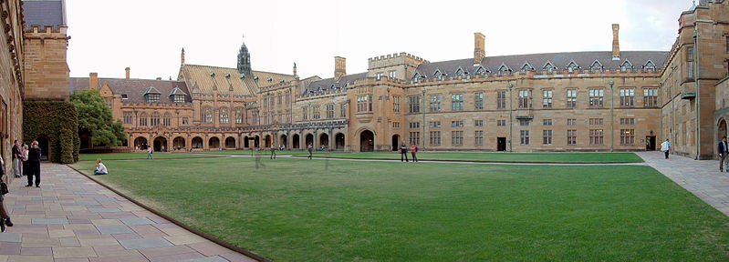

SIDNEY
Sydney es la ciudad mas grande y antigua de Australia. Con una poblacion superior a los 4 millones de habitantes, aqui fue donde los primeros colonos desembarcaron en 1788. Es una ciudad deslumbrante y vibrante, construida en torno a una de las bahias mas bonitas del mundo. Tiene playas impresionantes y de facil acceso en el mismo corazon de la ciudad. Sydney es la capital financiera de Australia y una de las ciudades mas multiculturales del mundo.
* Sydney es la ciudad mas antigua de Australia.
* Sydney es famosa por sus playas y el surf. Las playas mas famosas son Bondi Beach, Manly Beach y Palm Beach entre otros lugares fantasticos para surfistas y nadadores.
* Tambien hay muchos bosques y parques dispersos alrededor de Sydney donde hay caminos y senderos.
Sydney se encuentra dividida entre el Norte y el Sur por el puente Harbour Bridge.
* El distrito central de negocios (CBD) se encuentra ubicado en el lado sur del harbour.
* La ciudad tiene alrededor parques como el Hyde Park y el Domain. Darling Harbour y el Aquarium de Sydney se encuentran cerca el uno del otro.
* Podras coger el bus, tren o ferry para viajar alrededor de Sydney y disfrutar de sus maravillosas atracciones!
Durante los meses de invierno, nieva en las Snowy Mountains Las Snowy Mountains estan a seis horas en coche desde Sydney. Otros lugares para esquiar son Thredbo, Perisher y Selwyn. Durante el verano, el clima en Sydney es calido y humedo.
Sidney tiene una amplia variedad de instituciones culturales. La iconica Opera de Sidney tiene cinco salas capaces de albergar una amplia gama de estilos de interpretacion, y es el hogar de la Opera de Australia y de la Sinfonica de Sidney. Otros lugares de interes son el Ayuntamiento de Sidney, el City Recital Hall, el Teatro Estatal, el Teatro Real, el Teatro de Sidney y el Teatro Wharf.
El deporte en Sidney es una parte importante de la cultura. La zona esta bien dotada de parques y accesos a los cursos de agua, ademas de tener muchas areas naturales incluso dentro del centro de la ciudad. En el centro de Sidney se encuentran el Jardin Chino de la Amistad, el Hyde Park, el The Domain y el Real Jardin Botanico. El area metropolitana contiene varios parques nacionales, incluido el Royal National Park, el segundo parque nacional mas antiguo del mundo.
El deporte mas popular en Sidney es el rugby league.

Sidney cuenta con algunas de las universidades mas destacadas de Australia, entre las que se incluyen la Universidad de Sidney, fundada en 1850, es la universidad mas antigua de Australia, y la mas grande y altamente calificada no solo en Sidney, sino tambien en Nueva Gales del Sur.